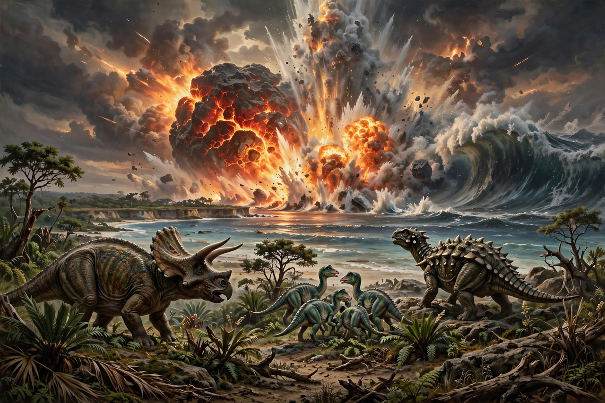

Chicxulub impact
From Wikipedia, the free encyclopedia

The Chicxulub impact event was the collision of an asteroid about 10–15 km wide with the Earth at the site of today's Chicxulub crater, on Mexico's Yucatán Peninsula, 66 million years ago. The impact is the leading explanation of the Cretaceous–Paleogene extinction event, which eliminated about 75% of species, including all non-avian dinosaurs, and opened the way for the age of mammals.
Discovery
In 1980 Luis and Walter Alvarez and colleagues reported a worldwide clay layer enriched in Iridium at the Cretaceous–Paleogene boundary and proposed an impact cause. The crater itself — some 180–200 km across, buried under the Yucatán — was identified in 1991 from gravity anomalies recorded during oil exploration by Pemex; its age matched the boundary. Impact signatures (shocked quartz, tektites, tsunami deposits) are found worldwide.
Effects
The impact released energy equivalent to billions of atomic bombs, igniting wildfires, generating mega-tsunamis and injecting sulphur aerosols and dust into the stratosphere. The resulting 'impact winter' shut down photosynthesis for months to years, collapsing food chains. Acid rain and long-term carbon-cycle disruption followed; marine and terrestrial ecosystems took millions of years to recover.
Debate
A minority of researchers emphasise the role of the contemporaneous Deccan Traps flood volcanism in India, either as co-cause or primary driver; the current consensus, reaffirmed by reviews of the drilling cores from the crater (IODP Expedition 364, 2016), assigns the extinction's timing and main kill mechanism to the impact, with volcanism possibly stressing ecosystems beforehand.